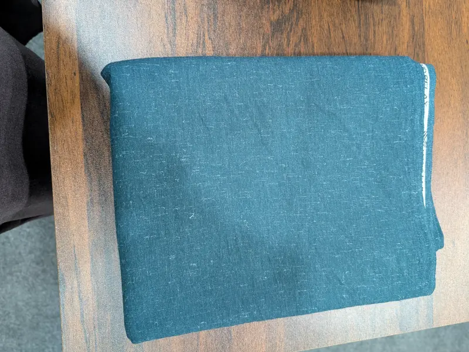
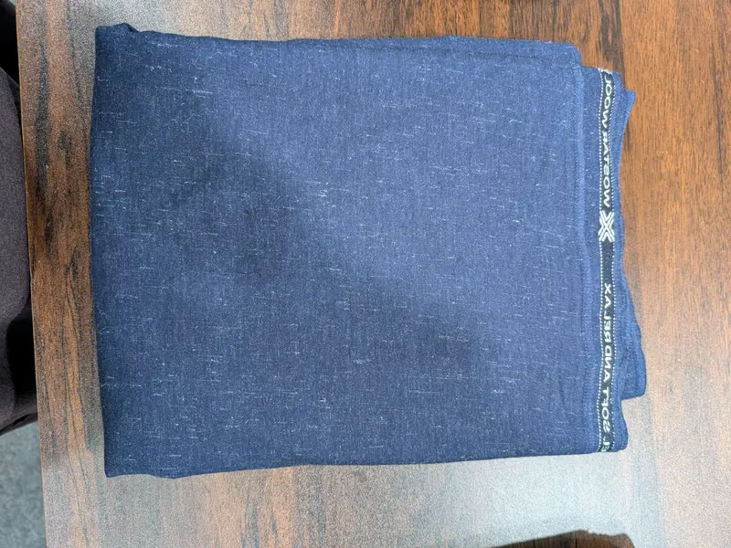
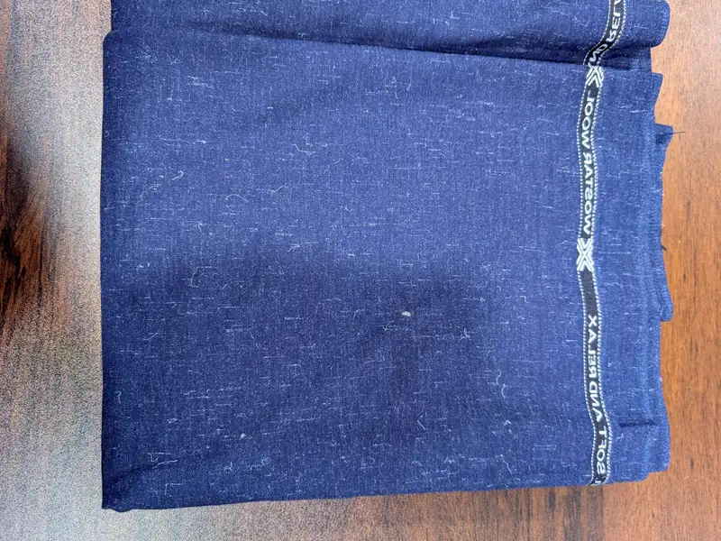

PV Suiting Fabrics: Polyester-Viscose Woven Fabric, Wholesale from Lahore
Polyester-viscose (PV) is the working blend for men's unstitched suiting. ENZO weaves PV constructions to order and holds a limited ready-stock PV lot. Every quality is quoted from a written specification so that both sides agree what is being bought.
Specification block
Items marked [VERIFY SPEC] are confirmed with ENZO per quality before quoting.
| Composition | Polyester / viscose (PV) blend, woven. Blend ratio per quality: [VERIFY SPEC] |
|---|---|
| Yarn count | Counts ENZO weaves include 36/1, 37/1 and 26/1 PV, plus custom counts. Count per quality: [VERIFY SPEC] |
| Weave / construction | EPI × PPI and weave per quality (a PV Blend running quality is listed at 100 × 80 ends × picks per inch; weave and counts to be confirmed): [VERIFY SPEC] |
| Width | [VERIFY SPEC] |
| GSM | [VERIFY SPEC] |
| Finish | [VERIFY SPEC] |
| Applications | Men's unstitched suiting; uniform and formal-wear programmes. |
| MOQ | [VERIFY SPEC] |
| Custom options | Construction (EPI × PPI), yarn count, width, shade (dyed through external dyeing partners) and finish can be specified per order. |
Photography



MOSES: PV blend, ready-stock lot (seven colours). See the ready-stock lot.
How an order runs
Specify
You send the spec or a reference sample. Tools and templates are on this site.
Review & quote
ENZO checks the construction and replies with questions or a quotation.
Weave & dye
Yarn procurement, weaving on ENZO's looms, dyeing through external partners where required.
Inspect & dispatch
Independent final inspection before the fabric leaves.
Read the full operating model on the manufacturing page.
Related tools and guides
Questions
What information does ENZO need to quote PV Suiting Fabrics?
Composition, yarn counts, EPI × PPI, weave, width, GSM target, finish, shade (or greige), order volume in metres and target timeline. Partial information is fine; ENZO replies with what is missing.
Is a sample available before a bulk order?
Sampling arrangements depend on the construction and are agreed in the quotation. Ask for sample terms in your RFQ.
Can I get a GSM figure before ordering?
Use the GSM calculator for a theoretical value from your construction. ENZO confirms against a weighed sample.
Ready to specify PV Suiting Fabrics?
Send what you have. ENZO reviews the specification before quoting.